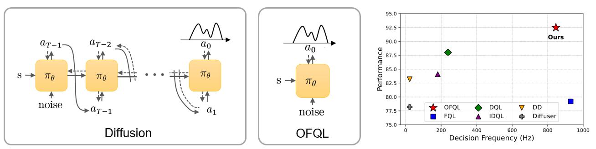
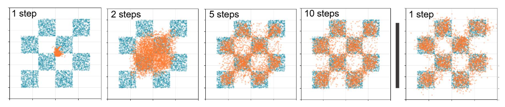

TL;DR: One-Step Flow Q-Learning (OFQL) replaces the slow, multi-step denoising
process in Diffusion Q-Learning with a direct one-step action generation method by learning an
average velocity field. This eliminates the need for auxiliary modules or distillation, leading to
faster, more stable training and inference while achieving state-of-the-art performance on
D4RL—outperforming even multi-step diffusion policies.
Overview

From inefficient training and suboptimal performance of multi-step denoising to fast,
high-performance one-step action generation. From left to right: (a) Multi-step diffusion policies
require 5–100 denoising steps, resulting in slow inference and training, and further rely on
backpropagation through time, which can lead to suboptimal performance. (b) OFQL enables one-step
action generation while still capturing complex action distributions, allowing for fast inference
and stable training without distillation or complicated multi-stage procedures. (c) OFQL achieves
state-of-the-art performance on D4RL benchmarks, outperforming multi-step diffusion policies while
being significantly faster in both training and inference.
Algorithm Overview
Three key components of OFQL:
1One-Step Policy Modeling via Average Velocity Field
Multi-step sampling in diffusion and flow-based policies introduces significant latency,
while distillation-based one-step methods rely on complex training pipelines. Leveraging the
MeanFlow identity, OFQL learns an average velocity field that directly approximates the flow
endpoint in a single step—without distillation. This enables fast inference and eliminates
the need for backpropagation through time.
2Behavior-Regularized Q-Learning
OFQL builds on behavior-regularized Q-learning for offline reinforcement learning with
one-step action generation. The Q-function is optimized via temporal-difference learning,
while the policy maximizes the learned critic under an implicit constraint that keeps it
close to the behavior policy, resulting in stable and efficient learning.
3Surpassing Behavior-Policy Performance
Pure imitation learning is fundamentally limited by dataset quality and cannot exceed
behavior-policy performance. OFQL addresses this limitation through Q-learning, enabling
performance beyond the behavior policy while maintaining stability in the offline setting.
Experimental Results
Q1: Can one-step generation match or exceed multi-step diffusion policies while achieving faster
inference?
Answer: Yes. OFQL not only matches but exceeds multi-step diffusion policies while enabling faster one-step inference.
Across benchmarks, OFQL consistently outperforms DQL and other diffusion-based methods: +4.6 on MuJoCo (87.9 → 92.5), +20.0 on AntMaze (64.6 → 84.6), and +5.4 on Kitchen (61.6 → 67.0). It also significantly surpasses one-step baselines like FQL.
These gains stem from (1) expressive one-step policy modeling that captures complex action distributions, and (2) more stable Q-learning by avoiding backpropagation through time.
Dataset
Non-Diffusion Policies
Diffusion Planners
Multi-step Diffusion Policies
One-step Flow Policies
BC
TD3-BC
IQL
Diffuser
DD
EDP
IDQL
DQL
FQL
OFQL (Ours)
HalfCheetah-Medium-Expert
55.2
90.7
86.7
90.3 ± 0.1
88.9 ± 1.9
95.8 ± 0.1
91.3 ± 0.6
96.8 ± 0.3
99.8 ± 0.1
95.2 ± 0.4
Hopper-Medium-Expert
52.5
98.0
91.5
107.2 ± 0.9
110.4 ± 0.6
110.8 ± 0.4
110.1 ± 0.7
111.1 ± 1.3
86.2 ± 1.3
110.2 ± 1.3
Walker2d-Medium-Expert
107.5
110.1
109.6
107.4 ± 0.1
108.4 ± 0.1
110.4 ± 0.0
110.6 ± 0.0
110.1 ± 0.3
100.5 ± 0.1
113.0 ± 0.1
HalfCheetah-Medium
42.6
48.3
47.4
43.8 ± 0.1
45.3 ± 0.3
50.8 ± 0.0
51.5 ± 0.1
51.1 ± 0.5
60.1 ± 0.1
63.8 ± 0.1
Hopper-Medium
52.9
59.3
66.3
89.5 ± 0.7
98.2 ± 0.1
72.6 ± 0.2
70.1 ± 2.0
90.5 ± 4.6
74.5 ± 0.2
103.6 ± 0.1
Walker2d-Medium
75.3
83.7
78.3
79.4 ± 1.0
79.6 ± 0.9
86.5 ± 0.2
88.1 ± 0.4
87.0 ± 0.9
72.7 ± 0.8
87.4 ± 0.1
HalfCheetah-Medium-Replay
36.6
44.6
44.2
36.0 ± 0.7
42.9 ± 0.1
44.9 ± 0.4
46.5 ± 0.3
47.8 ± 0.3
51.1 ± 0.1
51.2 ± 0.1
Hopper-Medium-Replay
18.1
60.9
94.7
91.8 ± 0.5
99.2 ± 0.2
83.0 ± 1.7
99.4 ± 0.1
101.3 ± 0.6
85.4 ± 0.5
101.9 ± 0.7
Walker2d-Medium-Replay
26.0
81.8
73.9
58.3 ± 1.8
75.6 ± 0.6
87.0 ± 2.6
89.1 ± 2.4
95.5 ± 1.5
82.1 ± 1.2
106.2 ± 0.6
Average (MuJoCo)
51.9
75.3
77.0
78.2
83.2
82.4
84.1
87.9
79.2
92.5
AntMaze-Medium-Play
0.0
10.6
71.2
6.7 ± 5.7
8.0 ± 4.3
73.3 ± 6.2
67.3 ± 5.7
76.6 ± 10.8
78.0 ± 7.0
88.1 ± 5.0
AntMaze-Large-Play
0.0
0.2
39.6
17.3 ± 1.9
0.0 ± 0.0
33.3 ± 1.9
48.7 ± 4.7
46.4 ± 8.3
84.0 ± 7.0
84.0 ± 6.1
AntMaze-Medium-Diverse
0.8
3.0
70.0
2.0 ± 1.6
4.0 ± 2.8
52.7 ± 1.9
83.3 ± 5.0
78.6 ± 10.3
71.0 ± 13.0
90.2 ± 4.2
AntMaze-Large-Diverse
0.0
0.0
47.5
27.3 ± 2.4
0.0 ± 0.0
41.3 ± 3.4
40.0 ± 11.4
56.6 ± 7.6
83.0 ± 4.0
76.1 ± 6.6
Average (AntMaze)
0.2
3.5
57.1
13.3
3.0
50.2
59.8
64.6
79.0
84.6
Kitchen-Mixed
51.5
0.0
51.0
52.5 ± 2.5
75.0 ± 0.0
50.2 ± 1.8
60.5 ± 4.1
62.6 ± 5.1
50.5 ± 1.6
69.0 ± 1.5
Kitchen-Partial
38.0
0.0
46.3
55.7 ± 1.3
56.5 ± 5.8
40.8 ± 1.5
66.7 ± 2.5
60.5 ± 6.9
55.7 ± 2.5
65.0 ± 2.3
Average (Kitchen)
44.8
0.0
48.7
54.1
65.8
45.5
66.6
61.6
53.1
67.0
Table: Comparison of OFQL with other efficient one-step methods on D4RL benchmarks.
OFQL achieves competitive or superior performance with only 1 denoising step compared to DQL, while other methods
suffer significant performance drops.
Q2: How does OFQL perform compared to other Strategies Toward One-Step Prediction?
Answer: OFQL outperforms all existing strategies for one-step prediction. Naïvely reducing DQL to one step using DDIM leads to a severe performance drop (−76.3), while FBRAC (−20.8) and FQL (−8.7), utilizing Flow Matching, partially mitigate this but still underperform DQL. In contrast, OFQL not only avoids this degradation but surpasses DQL itself by +4.7, demonstrating that it is the only method that achieves both efficient one-step sampling and superior performance.
Method (Steps)
DQL (5)
DQL+DDIM (1)
FBRAC (1)
FQL (1)
OFQL (1)
Score
87.9
11.6 (-76.3)
67.1 (-20.8)
79.2 (-8.7)
92.6 (+4.7)
Table: Comparison of OFQL with other efficient one-step methods on D4RL benchmarks.
OFQL achieves competitive or superior performance with only 1 denoising step, while other methods
suffer significant performance drops.
Q3: Can OFQL preserve the expressive power of the diffusion/flow model?
Answer: Yes. OFQL preserves the expressive power of the diffusion/flow model while
achieving efficient performance.

Figure: Comparison of distribution modeling capabilities between FM with marginal velocity
parameterization (left; evaluated at 1,2,5,10 steps generation) and average velocity
parameterization (right; evaluated with one-step generation) on a toy dataset with complex
multi-modal structure.
Q4: Where I can find more results?
Answer: Please visit our paper for more experimental results.
Citation
BibTeX
@inproceedings{nguyenone,
title={One-Step Flow Q-Learning: Addressing the Diffusion Policy Bottleneck in Offline Reinforcement Learning},
author={Nguyen, Thanh Xuan and Yoo, Chang D},
booktitle={The Fourteenth International Conference on Learning Representations},
year={2026},
url={https://arxiv.org/abs/2508.13904},
}